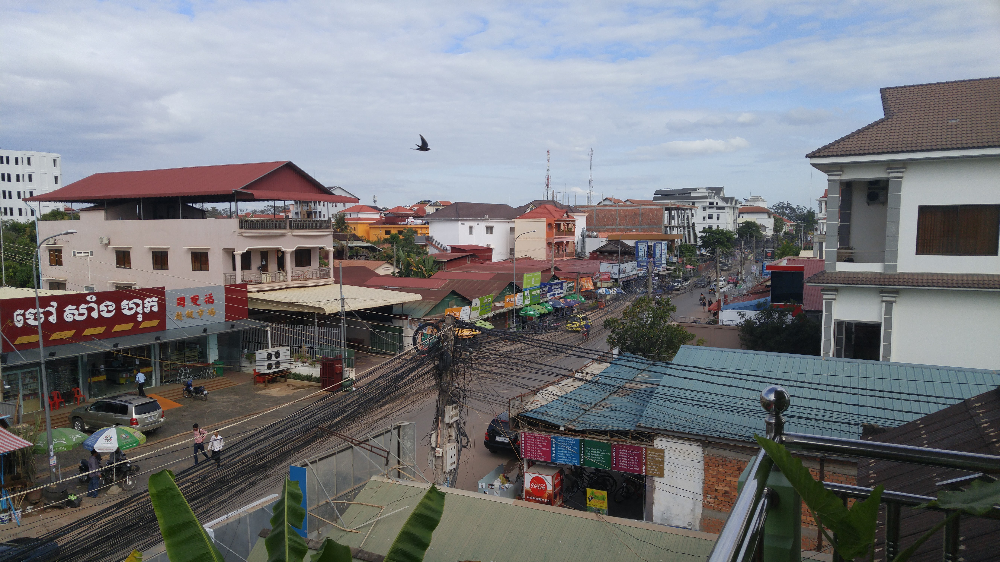

Go Back
Siem Reap

Siem Reap is probably the most popular tourist destinations in Cambodia and even in all of Southeast Asia. This is mainly because it sits right next to the ancient Angkor Archaeological Zone. I've created a seperate page about Angkor and some of my favourite temples to visit but on this one I'll focus on activities in the city itself as well as alternative tourist activities other than the archaeological zone. Siem Reap in my opinion was Cambodia's most charming city and has quite a different feel than Phnom Penh. For me it was a great introduction to Cambodia. It felt tranquil, peaceful and pleasant. The hospitality of the people was also immediately noticeable. Here are my recommendations for Siem Reap.
One day trip that I did from Siem Reap aside from the Angkor Temples was visit one of the Tonle Sap Floating Villages. My hostel (Topsky Hostel) offered tours where you drive out about 30 minutes to the Tonle Sap River and take a guided boat tour through the floating village and the mangrove swamps. This was a very memorable experience for me. One of the hotel staff drove me out to the starting point in a tuk tuk where I met my two guides who were no older than 12 years old. The two boys showed me to the long wooden boat and we began on our tour. They told me about details of daily life in the floating village and showed me how different animals are farmed such as crocodiles and pigs and how different resources are used to sustain life. After going down the river in the larger motorized boat we got off in a floating restaurant type place next to a dense mangrove swamp. Here we transfered to a smaller boat where a lady paddled us through the mangrove with an ore while here young son slept on the boat. There were local vendors drifting around with boats full of common products like drinks and snacks. After disembarking from the small wooden boat I got back onto the big motorized boat and we returned to the starting point. It was remarkable that two guides so young were able to navigate a boat and explain to me in reasonably good English aspects of daily life. This is something that is not uncommon in Cambodia. It's common to see young children speak multiple languages but many older people not understand much if any English at all. Overall a very cool experience that I highly recommend in Siem Reap.
Pub Street is the center of action in the city and is the best part of town for tourists to go for a night out. It also features many restaurants with local foods as well as different sorts of performances. There are many bar/ restaurant type places though you'll likely pay slightly more here than on more local streets although it's still very affordable. One of my favourite parts of the Pub Street were all the little bar carts. They are like street food stalls but are fully stocked bars playing their own music. It's a unique experience and is a fun way to spend an evening/ night after visiting the incredible Angkor Temples.
Siem Reap was the best place I saw in Cambodia for markets. There are many markets in the touristy area near Pub Street such as the Old Market, Farmer's Market, Night Market, River Market and Art Center Night Market. Though I didn't go to all of these I did visit the night market/ farmer's market and was impressed by the variety and uniqueness of the products. They're definitely worth checking out while you're in Siem Reap.
As with most places in Southeast Asia, Cambodia has it's own unique and delicious food. The most memorable thing I ate in Siem Reap was a 6 protein hotpot (pictured center below). The hotpot isn't very uncommon in Asia but the ingredients for this one were not your average meats. It featured crocodile, ostrich, chicken, fish, snake and frog if memory serves. It was definitely an interesting food experience and overall quite delicious. There are many varieties of hotpots and other local dishes as well as western food served around the Pub Street area. You can even eat an assortement of bugs from street vendors! (Though I wouldn't necessarily recommend it). My final memory of food experiences in Siem Reap was eating the spiciest meal of my entire life. Pictured on the left below was a sort of seafood soup which was delicious. I was not prepared for the amount of hot sauce on the rice as the spice immediately hit me and was overwhelming. This is coming from someone who loves spicy food. Be wary of the spiciness of Cambodian food!
Top Sky Hostel was a great value for money. I stayed here back in 2017 and was very pleased with everything. The staff was extremely humble, friendly and helpful. They would arrange tuk tuk rides and I actually went with one of the staff 3 days to the Angkor Archaeological Park and 1 day to the Tonle Sap Floating Village. The cost to rent the tuk tuk with the driver for the day ranged from about 10-20 usd depending on the distances. The food they served at the hostel was cheap and nice. My favourite feature of this hostel was the rooftop bar. This was a great place to relax after exploring the wonderous sights in the area. It's also well situated in the main tourist area of town just a short walk from Pub Street and many other restaurants, bars, markets, massage parlours and different businesses. I believe I paid about 5 usd per night to stay here. The beds feature curtains which is always a nice feauture that allows for a bit more privacy at hostels. If you're on a budget looking for a good hostel this is the one! The view below is from the rooftop of the hostel.